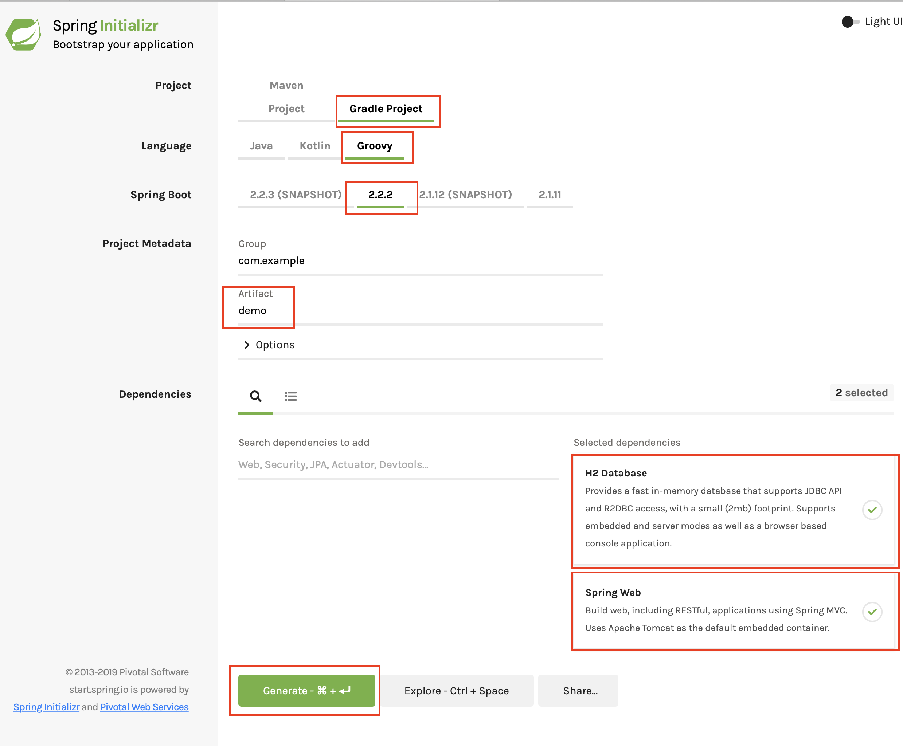

Build a Spring Boot application with GORM
Authors: Ben Rhine, Sergio del Amo
Version: 4
Table of Contents
1 Grails Training
2 Getting Started
In this guide you are going to build a Spring Boot application using GORM.
2.1 What you will need
2.2 How to complete the guide
If you want to start from scratch, create a new Spring Boot application using Spring Initializr.
Select a Gradle Project using Groovy with Spring Boot 1.5.6. Once you have selected
your build and project type, set the Group to your organization ie. com.example in our case
we will use demo.
Once that is done add the Web and h2 dependencies to the project.
Click Generate Project.
3 Configuring your Build
Edit build.gradle files to include GORM dependencies.
/build.gradle
link:../snippets/build.gradle[role=include]| 1 | Repository to resolve GORM dependencies. |
| 2 | Add the required dependencies for GORM to our project. |
| 3 | For connection pooling |
| 4 | To use WebClient in the tests, include the spring-webflux module in your project. |
3.1 Configuration
GORM for Hibernate can be configured with src/main/resources/application.yml file when using Spring Boot.
src/main/resources/application.yml
link:../snippets/src/main/resources/application.yml[role=include]4 Writing the Application
We are going to create a package structure similar to the one you find in Grails application:
-
demo.controller
-
demo.domain
-
demo.service
-
demo.init
4.1 Creating the domain
Now with our packages in place lets go ahead and create our domain objects.
-
Manufacturer.groovy
-
Vehicle.groovy
Feel free to use your favorite IDE to create these or execute the following
$ cd complete/src/main/groovy/demo/domain/
$ touch Manufacturer.groovy
$ touch Vehicle.groovyNow that all our class stubs are in place lets go ahead and edit them.
/src/main/groovy/demo/domain/Manufacturer.groovy
link:../snippets/src/main/groovy/demo/domain/Manufacturer.groovy[role=include]/src/main/groovy/demo/domain/Vehicle.groovy
link:../snippets/src/main/groovy/demo/domain/Vehicle.groovy[role=include]Manufacturer and Vehicle have a one-to-many relationship.
We are using GORM outside of Grails. Because of that, we need to annotate our domain classes with the grails.gorm.annotation.Entity. Additionally we implement the GormEntity trait.
It is merely to aid IDE support of GORM outside of Grails.
4.2 Seed Data
When the application starts we save some data.
/src/main/groovy/demo/Application.groovy
link:../snippets/src/main/groovy/demo/Application.groovy[role=include]| 1 | Disable Auto-configuration for Hibernate JPA. |
/src/main/groovy/demo/init/BootStrap.groovy
link:../snippets/src/main/groovy/demo/init/BootStrap.groovy[role=include]4.3 Creating the Service layer
Next lets create our service layer for our application.
$ cd src/main/groovy/demo/service
$ touch ManufacturerService
$ touch VehicleServiceWe are going to use GORM Data Services.
Data Services take the work out of implemented service layer logic by adding the ability to automatically implement abstract classes or interfaces using GORM logic.
/src/main/groovy/demo/service/ManufacturerService.groovy
link:../snippets/src/main/groovy/demo/service/ManufacturerService.groovy[role=include]/src/main/groovy/demo/service/VehicleService.groovy
link:../snippets/src/main/groovy/demo/service/VehicleService.groovy[role=include]4.4 Creating a controller
Finally lets create some controllers so we can have basic UI access to our data.
$ cd src/main/groovy/demo/controller
$ touch ManufacturerController
$ touch VehicleControllerNow let’s edit our controllers under src/main/groovy/demo/controller.
The controllers will have the following annotations
-
@RestController- Denotes the controller as restful and that it can return data via url -
@Autowired- Allows use to use dependency injection to access our services -
@RequestMapping("/")- Sets the url mapping for the method
/src/main/groovy/demo/controller/VehicleController.groovy
link:../snippets/src/main/groovy/demo/controller/VehicleController.groovy[role=include]Add a test:
/src/test/groovy/demo/controller/VehicleControllerTest.groovy
link:../snippets/src/test/groovy/demo/controller/VehicleControllerTest.groovy[role=include]/src/main/groovy/demo/controller/ManufacturerController.groovy
link:../snippets/src/main/groovy/demo/controller/ManufacturerController.groovy[role=include]Add a test:
/src/test/groovy/demo/controller/ManufacturerControllerTest.groovy
link:../snippets/src/test/groovy/demo/controller/ManufacturerControllerTest.groovy[role=include]Run the app:
./gradlew bootRun
You should be able to call the endpoints:
curl "http://localhost:8080"
and get the response:
["audi","ford"]
Or retrieve the vehicles of a manufacturer:
curl "http://localhost:8080/audi/vehicles"
and get the response:
["A3","A4"]